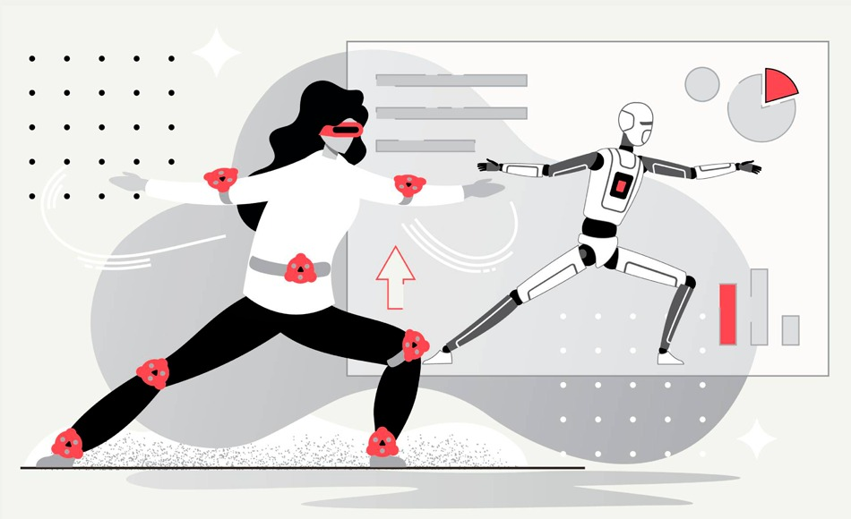
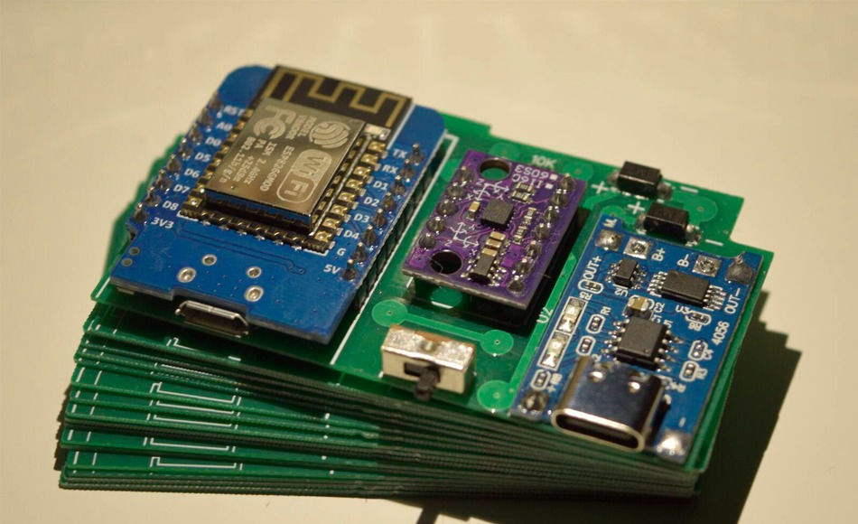

Te estaras preguntando que son los rastro cv1 y los rastro cv1 aux
Son rastreadores de movimiento o más conocidos como tracker cada tracker se pone en las articulaciones del cuerpo para rastrearlos dentro de la realidad virtual el combo más común es de 3 tracker 1 en la cintura y los otros 2 en cada rodilla esto deja que dentro de la realidad virtual no tengas perdida del cuerpo para que sea más preciso el margen del cuerpo y poder mover los pies dentro de la realidad virtual se puede ir sumando más tracker para ser más precisos el rastreo de movimiento. Con los cascos de realidad virtual solo tiene seguimiento la cabeza que sería el casco y de las manos que son los mandos
En otras palabras es para tener mas inmersion dentro de los juegos o programas de realid virtual

